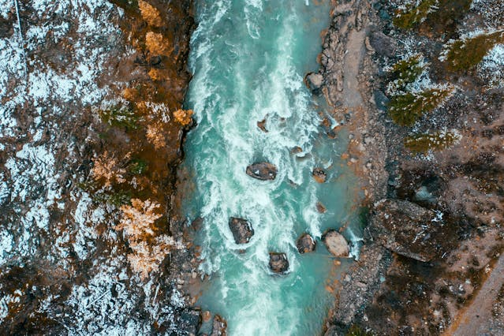

The river is loud. Almost hysterical.
You can tell your body is weak. Running was never a part of your skillset unfortunately. The river is thrashing around, making you second guess your decision. You can tell the body of water has a strong pull, thankfully you're a better swimmer than a runner. You can see the cave in the distance. You must make a decision if you want to survive the night.
Things to remember:
- You have two open wounds, small but open. Jumping in the river may lead to infection.
- Your body is weak, lungs are strained from miles of running. You're not used to this type of workout
- Your watch is physically broken but can still tell time. You have about 4 hours until sunlight.
- The cave while further than expected, you could make it running. It would be faster if you swam though.
Make the run anyways and go towards the cave
OR
Jump in the river and try to swim away

Go Back to Start